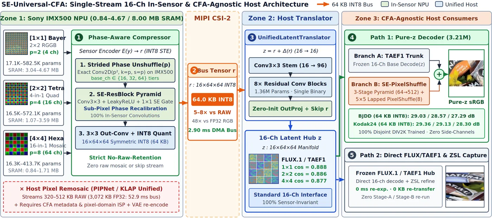
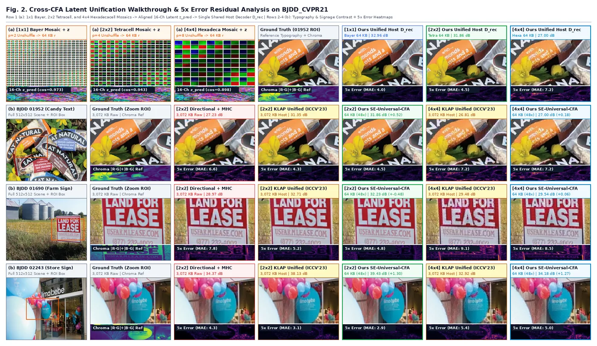
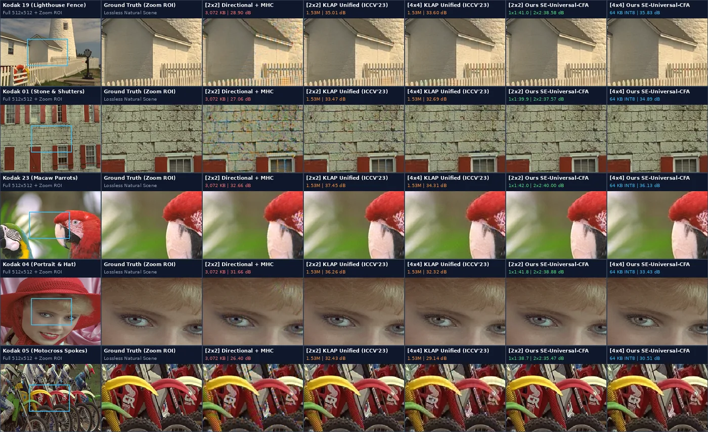
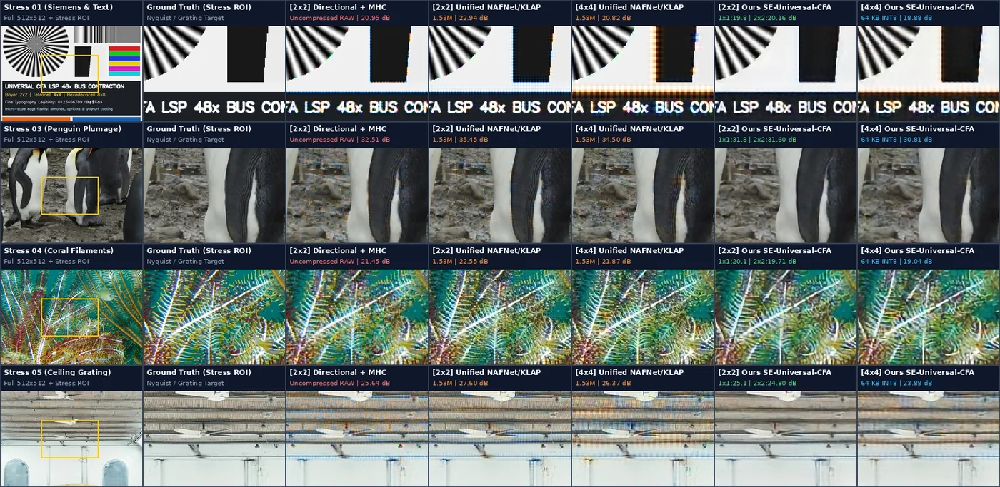

Universal In-Sensor Latent Signal Processing for Heterogeneous CFAs: Phase-Aware Implicit Remosaicing and 16-Channel Single-Stream Unification
High-resolution mobile sensors ($48\text{--}200\text{ MP}$) group $2\times 2$ (Tetracell, period $p=4$) or $4\times 4$ (Hexadecacell, period $p=8$) photodiodes under shared filters versus $1\times 1$ Bayer ($p=2$). Deploying monolithic host neural ISPs across heterogeneous Color Filter Arrays (CFAs) faces two bottlenecks: streaming uncompressed RAW ($320\text{--}512\text{ KB}$ packed or $3,072\text{ KB}$ FP32 RGB; $52.91\text{ ms}$, $14.9\text{ FPS}$) saturates the MIPI CSI-2 bus, while pattern changes force per-CFA host retraining or dynamic weight switching. We introduce SE-Universal-CFA, an asymmetric single-stream architecture unified on the 16-channel ($f=8, C=16$) FLUX.1 / TAEF1 manifold [3], [21] under strict No-Raw-Retention. Inside Sony IMX500 firmware ($0.84\text{--}4.65\text{ MB} / 8.00\text{ MB}$ SRAM), period-matched PixelUnshufflep ($p \in \{2,4,8\}$) and SELayer residual compressors [13], [14] emit a standardized $16\times 64\times 64$ INT8 bus tensor $\mathbf{r}$ ($64.0\text{ KB}$; $5.0\text{--}8.0\times$ smaller than RAW, $<0.02\text{ dB}$ quantization drop). On the host AP, a sensor-invariant translator ($\mathcal{T}_B$: $16\to 16$, $1.36\text{M}$) aligns $\mathbf{r}$ onto frozen FLUX.1 / TAEF1 latents ($\cos = 0.88\text{--}0.91$), driving a 100% CFA-agnostic pure-$\mathbf{z}$ lapped decoder ($\mathcal{D}_{\mathrm{rec}}$, $3.21\text{M}$). Trained solely on 774 disjoint DIV2K images ($0\%$ overlap), our $64\text{ KB}$ INT8 pipeline reaches 29.03 / 28.57 / 27.29 dB on unseen BJDD_CVPR21 and 29.36 / 29.13 / 28.30 dB on all 18 Kodak24 scenes—exceeding the rank-16 SVD bound ($27.86\text{ dB}$), beating classical remosaicing by $+0.98 / +1.96\text{ dB}$ under ISO-200 noise, and scaling to $34.20 / 31.73 / 31.03\text{ dB}$ at $C=48$.
1. Introduction
Modern mobile and edge CMOS image sensors spanning $48\text{ MP}$ to $200\text{ MP}$ routinely replace the classical $1\times 1$ Bayer Color Filter Array (CFA) of period $p=2$ [20] with clustered CFAs. By grouping $2\times 2$ (Tetracell / Quad-Bayer, $4$-in-$1$, $4\times 4$ RGGB macro-tile period $p=4$) or $4\times 4$ (Hexadecacell / $Q\times Q$, $16$-in-$1$, $8\times 8$ RGGB macro-tile period $p=8$) neighboring photodiodes beneath shared spectral filters—alongside $3\times 3$ Nonacell ($p=6$) configurations studied by Sharif et al. [26] and Lee et al. [18]—clustered sensors boost photon collection and SNR in dim scenes while requiring neural remosaicing and JDD under bright light [15], [25], [30].
Despite progress from quad-Bayer JDD networks such as PIPNet (BJDD) [25] and QRISP [15] and unified demosaicing models such as KLAP [18], executing monolithic pixel-domain networks on the host Application Processor (AP) induces three systems bottlenecks (Table 1):
- MIPI CSI-2 Serial Bus Saturation: Full-resolution RAW ($320\text{ KB}$ 10-bit packed, $512\text{ KB}$ 16-bit RAW, or $3,072\text{ KB}$ unpacked FP32 at $512\times 512$) saturates serial DMA ($52.91\text{ ms}$, capping throughput at $14.9\text{ FPS}$).
- Host-Side Weight Coupling: Even
KLAP[18] invokes FAIG dynamic pattern masks conditioned on sensor one-hot indicators inside every host convolution layer. - Redundant Pixel-to-Latent Re-Encoding: Pixel ISPs reconstruct $H\times W$ sRGB frames only for downstream $f=8$ latent generative models (
FLUX.1,TAEF1, Stable Diffusion) [3], [21], [23] to re-encode them back into latents.
We propose SE-Universal-CFA, an asymmetric split-inference architecture unified on the 16-channel ($f=8, C=16$) FLUX.1 / TAEF1 manifold under strict No-Raw-Retention:

SE-Universal-CFA (16-Channel Single-Stream LSP). Zone 1 (Sony IMX500, $0.84\text{--}4.65\text{ MB} / 8.00\text{ MB}$ SRAM, $11\%\text{--}59\%$ util.): Heterogeneous CFAs ($1\times 1$ Bayer, $2\times 2$ Tetracell, $4\times 4$ Hexadecacell) undergo period-exact PixelUnshufflep, SE-ResBlock compression, and INT8 STE into $\mathbf{r} \in \mathbb{Z}_8^{16\times 64\times 64}$ ($64.0\text{ KB}$; $5\text{--}8\times$ smaller than RAW, $48\times$ vs. FP32 RGB) under No-Raw-Retention. Zone 2: Sensor-invariant $\mathcal{T}_B$ ($1.36\text{M}$) maps $\mathbf{r} \to \mathbf{z}$ ($\cos \le 0.912$). Zone 3: Resident $\mathbf{z}$ drives CFA-agnostic $\mathcal{D}_{\mathrm{rec}}$ ($3.21\text{M}$), stock VAEs, and diffusion.
| Method / Venue | Evaluated CFAs | Execution Locus | MIPI Bus Payload ($512^2$) $\downarrow$ | Bus Latency / FPS $\uparrow$ | Host AP CFA Invariance | 16-Ch Latent Hub & Zero-Shot |
|---|---|---|---|---|---|---|
Malvar-He-Cutler (MHC) [20] (ICASSP'04) |
Bayer (1×1) + Remosaic | Host AP ISP | 320–512 KB RAW (3,072 KB FP32) | 52.91 ms / 14.9 FPS | Separate remosaic per CFA | No (Pixel-Only) |
BJDD / PIPNet (3.47M) [25] (CVPRW'21) |
Bayer (1×1), Tetra (2×2) | Host AP GPU/NPU | 320–512 KB RAW (3,072 KB FP32) | 52.91 ms / 14.9 FPS | No (Dedicated per-CFA model) | No (Pixel-Only) |
SAGAN [26] / QRISP [15] (2021–22) |
Nona (3×3) / Quad (2×2) | Host AP GPU/NPU | 320–512 KB RAW (3,072 KB FP32) | 52.91 ms / 14.9 FPS | No (Pattern-specific weights) | No (Pixel-Only) |
KLAP Unified (1.53M) [18] (ICCV'23) |
1×1, 2×2, 3×3, 4×4 | Host AP GPU/NPU | 320–512 KB RAW (3,072 KB FP32) | 52.91 ms / 14.9 FPS | Partial (FAIG dynamic masks) | No (Pixel-Only) |
Gen-1 4-Ch SA8 LSP ($C=4$) |
1×1, 2×2, 4×4 | Split Sensor + Host NPU | 16 KB INT8 / 64 KB FP32 | 2.90 ms / 30.0 FPS | Partial (4-ch bottlenecks quality) | SD 2.1 (22.3 dB cap) |
Proposed SE-Universal-CFA (Ours, $C=16$) |
Bayer 1×1, Tetra 2×2, Hexa 4×4 | IMX500 $\mathcal{E}_A^{\mathrm{CFA}}$ + Host $\mathcal{T}_B, \mathcal{D}_{\mathrm{rec}}$ | 64.0 KB INT8 (5–8× RAW; 48× FP32) | 2.90 ms / 30.0 FPS | 100% Unified $\mathcal{T}_B$ + Pure-z $\mathcal{D}_{\mathrm{rec}}$ | Yes (FLUX.1 / TAEF1, $\cos \le 0.912$) |
mct PTQ + imxconv-tf) SRAM Audit (imx500_compile_audit.json).| Sensor CFA Topology | Compressor ($\mathcal{E}_A^{\mathrm{CFA}}$, $C=16$) | Params (b16 / b32 / b64) $\downarrow$ |
Keras Weight Mem | IMX500 SRAM Total ($\le 8.00\text{ MB}$) | Chip Util. | Bus ($512^2$) | Cos (BJDD / CIS) $\uparrow$ |
Compiler Status |
|---|---|---|---|---|---|---|---|---|
| Bayer (1×1, $p=2$) | BayerPhaseCompressor |
17,128 / 62,400 / 582,496 | 60.9–373.5 KB | 3.02 / 4.65 / 3.37 MB | 38% / 59% / 43% | 64.0 KB INT8 | 0.8882 / 0.9122 | PASS (StridedConv) |
| Tetracell (2×2, $p=4$) | TetracellPhaseCompressor |
16,536 / 56,608* / 572,096 | 52.2–363.8 KB | 1.05 / 1.56 / 3.36 MB | 14% / 20% / 42% | 64.0 KB INT8 | 0.8857 / 0.9098 | PASS (StridedConv) |
| Hexadecacell (4×4, $p=8$) | HexadecaPhaseCompressor |
16,340 / 61,184 / 413,676 | 56.8–352.8 KB | 0.84 / 0.84 / 1.47 MB | 11% / 11% / 19% | 64.0 KB INT8 | 0.8767 / 0.9029 | PASS (StridedConv) |
| Host Stage B ($\mathcal{T}_B$) | UnifiedLatentTranslator |
1,356,400 (1.36M shared) | 1.36 MB (INT8) | Host NPU (Hailo-8) | <1.3 ms | $z \in \mathbb{R}^{16\times 64^2}$ | 100% Sensor-Invar. | Single Binary |
| Host Decoder ($\mathcal{D}_{\mathrm{rec}}$) | DemosaicPixelShuffleDecoder |
3,212,742 (1.23M + 1.98M) | 3.21 MB (INT8) | Host NPU / GPU | 30.0 FPS | $\hat{X} \in \mathbb{R}^{3\times 512^2}$ | 100% Pure-z | Zero Raw Skip |
2. Related Work
Clustered CFA Remosaicing and Dedicated Host JDD: Classical interpolation by Malvar et al. [20] (MHC) and Hamilton-Adams [12] alongside deep Bayer JDD [4], [10], [22] exploit high green sampling density, whereas clustered architectures such as PIPNet (BJDD) [25], SAGAN [26], QRISP [15], MIPI [30], NAFNet [5], TSANet [7], and VMamba [19] raise clean-crop accuracy via full-resolution pixel skips, yet remain pattern-specific and consume $320\text{--}512\text{ KB}$ RAW ($5\text{--}8\times$ larger than our bus).
Unified Multi-Pattern Demosaicing & 16-Ch Latent ISPs: Lee et al. [18] (KLAP) modulate shared NAFNet [5] filters dynamically via $W_{\mathrm{KLAP}}(\mathbf{g}) = W_{\mathrm{shared}} + \sum_c g_c (M_c \odot \Delta W_c)$ (reaching $35.66 / 30.18 / 28.97\text{ dB}$ on disjoint DIV2K). Conversely, prior LDM ISPs and 16-ch VAEs [2], [3], [6], [8], [9], [11], [16], [17], [21], [23], [24], [29], [31], [32] operate on host RAW or $f=8, C=4/16$ RGB encoders. By pairing period-matched strided permutation convs, SENet [13], PixelShuffle [27], and INT8 STE [14], we keep both host $\mathcal{T}_B$ and $\mathcal{D}_{\mathrm{rec}}(\mathbf{z})$ 100% sensor invariant under IMX500's $8.00\text{ MB}$ SRAM cap.
3. Sensor Physics and Rate-Distortion Bounds
3.1 Clustered CFA Sampling and Phase Aliasing
Let $\mathbf{I}_{\mathrm{lin}} = \mathrm{clip}(\mathbf{X}, \epsilon, 1)^{\gamma}$ ($\gamma=2.2$) denote linear radiance and $M_c^{(q)} \in \{0,1\}^{1\times H\times W}$ ($c\in\{R,G,B\}$) denote $q\times q$ clustered RGGB indicator masks of tile period $p = 2q \in \{2,4,8\}$. Physical sensor capture under heteroscedastic noise $\boldsymbol{\eta}$ and $B$-bit ADC quantization $\mathcal{Q}_B$ follows:
Naive stride-2 stems ($s=2 < p$) mix distinct translation cosets on $p \in \{4,8\}$ CFAs, inducing $22.00\text{ dB}$ ($2\times 2$) and $21.65\text{ dB}$ ($4\times 4$) zippering in Gen-1 stride-conv compressors (Table 3). Period-exact PixelUnshufflep isolates each photosite phase coset $(u,v) \in \{0,\dots,p-1\}^2$ into an alias-free $p^2$-channel tensor before compression.
3.2 No-Raw-Retention Rate-Distortion Bounds
Under No-Raw-Retention, inference forms $\mathbf{y} \to \mathbf{r}_{\mathrm{int8}} \to \mathbf{z} \to \hat{\mathbf{X}}$. Partitioning $8\times 8\times 3 = 192$-dim patches with sorted covariance eigenvalues $\lambda_1 \ge \dots \ge \lambda_{192}$, the Eckart-Young-Mirsky rank-$C$ SVD ceiling satisfies:
evaluating on BJDD_CVPR21 to $22.01\text{ dB}$ ($C=4$), $27.86\text{ dB}$ ($C=16$), and $35.91\text{ dB}$ ($C=48$), while nonlinear $f=8, C=16$ clean-RGB VAEs saturate at $31.08\text{ dB}$ (TAEF1) and $33.84\text{ dB}$ (FLUX.1) on BJDD_CVPR21 ($29.89 / 32.64\text{ dB}$ on Kodak24).
4. Single-Stream Universal CFA Architecture
4.1 Zone 1: In-Sensor Phase-Aware Compression
Each sensor variant compiles a matched compressor (BayerPhaseCompressor $582.5\text{K}$, TetracellPhaseCompressor $572.1\text{K}$, HexadecaPhaseCompressor $413.7\text{K}$ at b64) using IMX500-safe permutation strided convs, GAP+$1\times 1$ SELayer recalibration [13], and symmetric INT8 STE quantization ($s=\max(|\mathbf{r}_{\mathrm{fp32}}|)/127$) [14] into $64.0\text{ KB}$ inside $0.84\text{--}4.65\text{ MB}$ of SRAM:
4.2 Zone 2: Sensor-Invariant Host Translator
Receiving $\mathbf{r}$ with zero CFA flags, UnifiedLatentTranslator ($\mathcal{T}_B$: $16\to 16$, $1,356,400$ params, 8 pre-activation residual blocks at width 96, zero-init identity output) maps $\mathbf{z} = \mathbf{r} + f_{\theta}(\mathbf{r})$ onto frozen TAEF1 / FLUX.1 latents ($\cos = 0.8767\text{--}0.8882$ on BJDD; $0.9029\text{--}0.9122$ on real KLAP CIS).
SE-Universal-CFA.DIV2K images; frozen TAEF1 ($\mathcal{E}_{\mathrm{taef1}}, \mathcal{D}_{\mathrm{taef1}}$); sensor modes $\mathcal{M} = \{\text{Bayer } p{=}2, \text{Tetra } p{=}4, \text{Hexa } p{=}8\}$.Output: Sensor firmware $\mathcal{E}_A^{\mathrm{CFA}}$, single shared $\mathcal{T}_B(16{\to}16)$, and single pure-$\mathbf{z}$ decoder $\mathcal{D}_{\mathrm{rec}}(\mathbf{z})$.
b64) doDIV2K 0001..0774; simulate $\mathbf{y}_m \leftarrow \mathrm{CFA}_m(\mathbf{X})$ across $m \in \mathcal{M}$4.3 Zone 3: Pure-z Lapped Reconstruction
Decoding purely from $\mathbf{z}$ (subband_ch=0), DemosaicPixelShuffleDecoder ($3,212,742$ params: $1,229,443$ frozen TAEF1 trunk + $1,983,299$ trainable parameters) fuses a pretrained TAEF1 prior $\mathbf{X}_{\mathrm{taef1}}(\mathbf{z})$, a 3-stage $128\to 96\to 64\to 32$ SE-PixelShuffle(2) pyramid $\mathcal{U}_{\mathrm{SE\text{-}PS}}(\mathbf{z})$, and a $5\times 5$ cross-block lapped synthesis branch $\mathcal{H}_{\mathrm{lap}}(\mathbf{z}) = \mathrm{PixelShuffle}_8(\mathrm{Conv}_{5\times 5}^{\mathrm{reflect}}(\mathbf{z}))$ integrating $25$ latent neighbors ($40\times 40$ pixels) across macro-block boundaries:
Zero-shot stock TAEF1 ($23.80 / 23.65 / 23.27\text{ dB}$) and FLUX.1 ($23.56 / 23.48 / 23.02\text{ dB}$) preview compatibility, plus optional downstream generative synthesis via OnePassDiffusionBridge, comes natively from resident $\mathbf{z}$.
5. Experimental Evaluation
5.1 Disjoint Protocol and Baseline Setup
All models are trained from scratch on an NVIDIA RTX 5060 Ti ($16\text{ GB}$ VRAM, peak $7.40\text{ GB}$) using strictly 774 DIV2K training images (0001..0774) [1] and validated on 20 held-out DIV2K scenes (0775..0797 excluding 0780, 0785, 0792), ensuring 0.0% overlap against all 32 evaluation images (BJDD_CVPR21, Kodak24, KLAP_ICCV23 CIS [18], and Remosaic Stress). We also reproduce genuine pixel-domain KLAPUnifiedModel ($1.53\text{M}$) [18] and MobileRemosaicNet ($0.25\text{M}$) end-to-end on the same 774-image split alongside pretrained official PIPNet ($3.47\text{M}$) [25], reporting PSNR, MS-SSIM [28], and AlexNet LPIPS [33].
BJDD_CVPR21 ($512\times 512$, Disjoint DIV2K-Trained, $0\%$ Overlap): Oracle RGB Ceilings, Pixel-Domain Baselines, and Proposed SE-Universal-CFA.| # | Algorithm / Architecture | Execution Locus & Host Unification | Bus Payload ($512^2$) | Bayer (1×1) PSNR / MS-SSIM | Tetracell (2×2) PSNR / MS-SSIM / LPIPS | Hexadecacell (4×4) PSNR / MS-SSIM / LPIPS | Latent Hub ($\cos \uparrow$) |
|---|---|---|---|---|---|---|---|
| 0a | RGB Autoencoder Ceiling: FLUX.1 VAE ($C=16$) |
Oracle 3-Ch RGB ($f=8$ Ceiling) | 64 KB INT8 Latent | 33.84 dB / 0.9904 | 33.84 dB / 0.9904 / 0.0130 | 33.84 dB / 0.9904 / 0.0130 | 1.0000 (Oracle) |
| 0b | RGB Autoencoder Ceiling: TAEF1 ($C=16$) |
Oracle 3-Ch RGB ($f=8$ Ceiling) | 64 KB INT8 Latent | 31.08 dB / 0.9835 | 31.08 dB / 0.9835 / 0.0279 | 31.08 dB / 0.9835 / 0.0279 | 1.0000 (Target) |
| 1 | Sub-Cluster Pixel Binning + MHC [20] | Pixel Binning (1/4–1/16 Res) | 768 KB / 192 KB | 35.79 dB / 0.9945 | 27.79 dB / 0.9683 / 0.2005 | 22.76 dB / 0.8836 / 0.4941 | No (Pixel-Only) |
| 2 | Isotropic Color-Diff Remosaic + MHC | Host Pixel Classical | 320–512 KB RAW (3,072 KB FP32) | 35.79 dB / 0.9945 | 27.98 dB / 0.9643 / 0.1466 | 24.24 dB / 0.9168 / 0.2880 | No (Pixel-Only) |
| 3 | Directional Edge-Aware Remosaic + MHC | Host Pixel Classical (Hamilton-Adams) | 320–512 KB RAW (3,072 KB FP32) | 35.79 dB / 0.9945 | 30.19 dB / 0.9734 / 0.0794 | 26.24 dB / 0.9391 / 0.1790 | No (Pixel-Only) |
| 4 | MobileRemosaicNet (0.25M) + MHC |
Host Per-CFA Mobile NN | 320–512 KB RAW (3,072 KB FP32) | — | 31.09 dB / 0.9784 / 0.0579 | 28.06 dB / 0.9595 / 0.0971 | No (Pixel-Only) |
| 5 | Official BJDD / PIPNet (3.47M, CVPRW 2021) [25] |
Host Heavyweight JDD (Per-CFA) | 320–512 KB RAW (14.9 FPS) | 39.95 dB / 0.9974 | 35.85 dB / 0.9907 / 0.0198 | N/A (2×2 Dedicated) | No (Pixel-Only) |
| 6 | Genuine KLAP Unified (1.53M, ICCV 2023) [18] |
Host FAIG Dynamic Filter Masks | 320–512 KB RAW (14.9 FPS) | 35.66 dB / 0.9934 | 30.18 dB / 0.9747 / 0.0959 | 28.97 dB / 0.9646 / 0.0986 | No (Pixel-Only) |
| 7 | Gen-1 4-Ch SA8 LSP (SD 2.1, $C=4$) |
Split Sensor-Host (4-Ch) | 16 KB INT8 / 64 KB FP32 | 22.33 dB / 0.8696 | 22.08 dB / 0.8613 / 0.2861 | 21.15 dB / 0.8243 / 0.3560 | SD 2.1 ($C=4$) |
| 8a | Ours SE-Universal-CFA (b16, 16.3K–17.1K) |
100% Unified 16-Ch Pure-$z$ | 64 KB INT8 (30.0 FPS) | 27.89 dB / 0.9619 | 27.40 dB / 0.9571 / 0.1453 | 26.63 dB / 0.9470 / 0.1631 | 0.8766 / 0.8747 / 0.8674 |
| 8b | Ours SE-Universal-CFA (b32, 56.6K–62.4K) |
100% Unified 16-Ch Pure-$z$ | 64 KB INT8 (30.0 FPS) | 28.33 dB / 0.9648 | 27.83 dB / 0.9601 / 0.1295 | 27.09 dB / 0.9507 / 0.1402 | 0.8815 / 0.8785 / 0.8731 |
| 8c | Ours SE-Universal-CFA (b64, 413.7K–582.5K) |
100% Unified 16-Ch Pure-$z$ | 64 KB INT8 (5–8× RAW; 48× FP32) | 29.03 dB / 0.9701 (FP32: 29.05) | 28.57 dB / 0.9659 / 0.1106 (FP32: 28.59) | 27.29 dB / 0.9529 / 0.1344 (FP32: 27.30) | 0.8882 / 0.8857 / 0.8767 |

BJDD_CVPR21 scenes (01952.bmp candy typography, 01690.bmp farm lease sign, and 02243.bmp storefront sign). Columns compare full-resolution uncompressed pixel-domain baselines—Official BJDD / PIPNet ($3.47\text{M}$, $2\times 2$-only) and genuine DIV2K-trained KLAP Unified ($1.53\text{M}$, dynamic host filters)—against our Proposed SE-Universal-CFA (base_ch=64, $64\text{ KB}$ INT8, $29.03 / 28.57 / 27.29\text{ dB}$ mean) across [1×1] Bayer, [2×2] Tetracell, and [4×4] Hexadecacell, all reconstructed purely from $z \in \mathbb{R}^{16\times 64\times 64}$ by a single 100% CFA-agnostic host network ($\mathcal{T}_B + \mathcal{D}_{\text{rec}}$) at $5.0\times\text{--}8.0\times$ raw bus compression ($48\times$ vs. FP32 RGB).

Kodak24 ($18$ lossless scenes; representative gallery: kodim19.png lighthouse fence, kodim01.png stone masonry, kodim23.png macaw parrots, kodim04.png portrait, kodim05.png motocross spokes). From $64\text{ KB}$ INT8 single-channel mosaics, SE-Universal-CFA achieves $29.36\text{ dB}$ ($1\times 1$), $29.13\text{ dB}$ ($2\times 2$), and $28.30\text{ dB}$ ($4\times 4$) (MS-SSIM $0.9699 / 0.9653 / 0.9535$), reaching within $0.53\text{--}1.59\text{ dB}$ of the $29.89\text{ dB}$ 3-channel RGB TAEF1 autoencoder ceiling.

Remosaic Stress Benchmark ($8$ charts; TAEF1 RGB ceiling $24.73\text{ dB}$). Across synthetic Siemens stars and urban gratings, SE-Universal-CFA (b64 INT8) achieves $23.75 / 23.55 / 22.65\text{ dB}$ ($+4.75 / +4.67 / +4.42\text{ dB}$ over Gen-1 4-Ch SA8 LSP and $+1.60\text{ dB}$ over Isotropic + MHC on $4\times 4$), suppressing false-color Moiré fringes within the $f=8$ latent sampling limit.
DIV2K-Val, BJDD_CVPR21, Kodak24, KLAP_ICCV23 CIS, Remosaic Stress, and Physical ISO-200 Sensor Noise (PSNR in dB $\uparrow$).| Benchmark Suite (Unseen Scenes) | TAEF1 / FLUX.1 RGB Ceiling |
Directional + MHC (2×2 / 4×4) | PIPNet [25] (1×1 / 2×2) |
Genuine KLAP [18] (1×1 / 2×2 / 4×4) |
Ours b16 INT8 (1×1 / 2×2 / 4×4) |
Ours b32 INT8 (1×1 / 2×2 / 4×4) |
Ours b64 INT8 [FP32] (1×1 / 2×2 / 4×4) |
|---|---|---|---|---|---|---|---|
DIV2K-Val (20 Held-Out Scenes) |
— | — | — | 35.47 / 31.75 / 30.90 | 27.36 / 27.35 / 26.60 | 27.80 / 27.71 / 27.08 | 28.42 / 28.15 / 27.31 [28.44 / 28.16 / 27.32] |
BJDD_CVPR21: 01952.bmp (Candy) |
— | 27.23 / 23.42 | 36.98 / 33.43 | 31.59 / 27.44 / 26.43 | 25.49 / 25.00 / 24.30 | 25.92 / 25.41 / 24.75 | 26.59 / 26.08 / 24.96 |
BJDD_CVPR21: 01690.bmp (Farm Sign) |
— | 28.97 / 26.09 | 38.25 / 33.83 | 34.78 / 29.98 / 28.93 | 27.14 / 26.75 / 26.15 | 27.58 / 27.17 / 26.58 | 28.22 / 27.88 / 26.79 |
BJDD_CVPR21: 02243.bmp (Storefront) |
— | 34.37 / 29.20 | 44.62 / 40.30 | 40.61 / 33.12 / 31.53 | 31.04 / 30.45 / 29.44 | 31.49 / 30.91 / 29.94 | 32.29 / 31.76 / 30.12 |
BJDD_CVPR21 Mean (3 Scenes) |
31.08 / 33.84 | 30.19 / 26.24 | 39.95 / 35.85 | 35.66 / 30.18 / 28.97 | 27.89 / 27.40 / 26.63 | 28.33 / 27.83 / 27.09 | 29.03 / 28.57 / 27.29 [29.05 / 28.59 / 27.30] |
Kodak24 Mean (18 Lossless Scenes) |
29.89 / 32.64 | 30.32 / 28.81 | 41.10 / 37.83 | 37.61 / 33.34 / 32.52 | 28.35 / 28.13 / 27.44 | 28.81 / 28.56 / 28.00 | 29.36 / 29.13 / 28.30 [29.38 / 29.14 / 28.31] |
KLAP_ICCV23 CIS Mean (3 Real-CIS) |
29.18 / 31.59 | 28.92 / 27.33 | 36.22 / 33.58 | 33.92 / 31.23 / 30.29 | 27.84 / 27.80 / 27.26 | 28.10 / 28.04 / 27.65 | 28.51 / 28.29 / 27.56 ($\cos=0.912/0.910/0.903$) |
Remosaic Stress Mean (8 Charts) |
24.73 / 28.23 | 24.63 / 22.71 | 33.57 / 30.80 | 30.04 / 26.34 / 25.22 | 22.91 / 22.71 / 22.04 | 23.31 / 22.99 / 22.46 | 23.75 / 23.55 / 22.65 [23.76 / 23.56 / 22.66] |
ISO-200 Noisy Sensor (Shot+Read+10b ADC) |
31.34 (FLUX) | 26.69 / 24.93 (Alg.) | — | — | — | — | 27.89 / 27.67 / 26.89 +0.98 / +1.96 dB vs. Alg. |
Zero-Shot Stock TAEF1 / FLUX.1 |
— | — | — | — | — | — | BJDD: 23.80/23.65/23.27 (TAEF1) · 23.56/23.48/23.02 (FLUX) |

comp_base_ch $\in \{16, 32, 64\}$ trained strictly on disjoint DIV2K crops. Scaling $C=4 \to 16$ ($16 \to 64\text{ KB}$ INT8) yields $+5.71\text{ dB}$ on Bayer while matching the public FLUX.1 / TAEF1 hub; scaling further to $C=48$ ($192\text{ KB}$ INT8, still $1.67\times\text{--}2.67\times$ smaller than 10/16-bit RAW and $16\times$ smaller than FP32 RGB) climbs smoothly to $33.34 / 29.78 / 28.38\text{ dB}$ INT8 on BJDD_CVPR21 and $34.20 / 31.73 / 31.03\text{ dB}$ INT8 on Kodak24.
comp_base_ch=64, INT8 [FP32] PSNR in dB $\uparrow$).| Latent Channels $C$ | INT8 Bus ($512^2$) | Compression vs. 10–16b RAW / FP32 RGB | Linear SVD Bound (BJDD) |
BJDD_CVPR21 (1×1 / 2×2 / 4×4) INT8 |
Kodak24 (1×1 / 2×2 / 4×4) INT8 |
IMX500 SRAM & Manifold Notes |
|---|---|---|---|---|---|---|
| $C = 4$ | 16.0 KB | 20.0–32.0× / 192× | 22.01 dB | 22.00 / 21.91 / 21.72 dB | 23.31 / 23.23 / 23.12 dB | SD 2.1 / TAESD ($C=4$) |
| $C = 8$ | 32.0 KB | 10.0–16.0× / 96× | 25.13 dB | 25.09 / 24.83 / 24.39 dB | 26.24 / 26.04 / 25.76 dB | Compact Custom Latent |
| $C = 12$ | 48.0 KB | 6.7–10.7× / 64× | 26.71 dB | 26.63 / 26.13 / 25.54 dB | 27.58 / 27.20 / 26.87 dB | Mid-Rate Custom Latent |
| $C = 16$ (Canonical) | 64.0 KB | 5.0–8.0× / 48× | 27.86 dB | 29.03 / 28.57 / 27.29 dB | 29.36 / 29.13 / 28.30 dB | FLUX.1 / TAEF1 · Bayer 3.02–4.65 MB, Tetra 1.05–3.36 MB, Hexa 0.84–1.47 MB / 8.00 MB SRAM (11%–59% PASS) |
| $C = 24$ | 96.0 KB | 3.3–5.3× / 32× | 30.61 dB | 30.14 / 28.44 / 27.37 dB | 30.55 / 29.48 / 28.96 dB | High-Rate Custom Latent |
| $C = 32$ | 128.0 KB | 2.5–4.0× / 24× | 31.88 dB | 31.10 / 28.97 / 27.84 dB | 32.10 / 30.56 / 29.99 dB | High-Rate Custom Latent |
| $C = 48$ | 192.0 KB | 1.67–2.67× / 16× | 35.91 dB | 33.34 / 29.78 / 28.38 dB [33.99/30.03/28.55] | 34.20 / 31.73 / 31.03 dB [34.80/32.06/31.31] | High-Fidelity Archival Stream |
5.2 Multi-Suite Evaluation, Ablations, & Pareto Frontier
Across all 32 unseen images (Tables 3–4, Figs. 2–4), our b64 64 KB INT8 model hits $29.03 / 28.57 / 27.29\text{ dB}$ on BJDD_CVPR21 (exceeding the $27.86\text{ dB}$ rank-16 SVD bound by $+1.17 / +0.71\text{ dB}$, Gen-1 4-ch SA8 LSP by $+6.70 / +6.49 / +6.14\text{ dB}$, and Directional + MHC on $4\times 4$ Hexadecacell by $+1.05\text{ dB}$), $29.36 / 29.13 / 28.30\text{ dB}$ on Kodak24 (MS-SSIM $0.9699 / 0.9653 / 0.9535$), and $\cos=0.9122 / 0.9098 / 0.9029$ on real KLAP_ICCV23 CIS frames ($0.8767\text{--}0.8882$ on BJDD) via the $40\times 40$ lapped synthesis head. Under physical ISO-200 noise (10-bit ADC), contraction inside SE macro-cells achieves $27.89 / 27.67 / 26.89\text{ dB}$ ($+0.98 / +1.96\text{ dB}$ vs. MHC), with $\le 0.02\text{ dB}$ INT8 quantization drop vs. FP32. Scaling to $C=48$ ($192\text{ KB}$ INT8, Table 5, Fig. 5) reaches $33.34 / 29.78 / 28.38\text{ dB}$ (BJDD) and $34.20 / 31.73 / 31.03\text{ dB}$ (Kodak24), partitioning into compact b16 ($0.84\text{--}3.02\text{ MB}$), balanced b32 ($1.56\text{ MB}$ Tetracell SRAM), and flagship b64 ($1.47\text{--}3.37\text{ MB}$) deployment tiers.
Limitations: (i) Any $f=8, C=16$ bottleneck exhibits Nyquist roll-off on extreme synthetic zone plates in Remosaic Stress (02_chromatic_moire_gratings.png, where clean-RGB TAEF1 saturates at $24.73\text{ dB}$); (ii) implemented compressors assume power-of-two tile periods $p\in\{2,4,8\}$, requiring fractional $4/3$ resampling for $3\times 3$ Nonacell ($p=6$).
6. Conclusion
We introduced SE-Universal-CFA, an asymmetric sensor-AP split-inference architecture unifying Bayer ($1\times 1$), Tetracell ($2\times 2$), and Hexadecacell ($4\times 4$) sensors onto a single 16-channel translator ($\mathcal{T}_B$: $16\to 16$) and a single 100% CFA-agnostic pure-$\mathbf{z}$ decoder ($\mathcal{D}_{\mathrm{rec}}(\mathbf{z})$) aligned with FLUX.1 / TAEF1 [3], [21]. Compressing in-sensor mosaics within $0.84\text{--}4.65\text{ MB}$ of Sony IMX500 SRAM ($11\%\text{--}59\%$ util.) into a standardized $64.0\text{ KB}$ INT8 stream ($5\text{--}8\times$ smaller than packed RAW, $48\times$ smaller than FP32 RGB, $<0.02\text{ dB}$ quantization drop) achieves $29.03 / 28.57 / 27.29\text{ dB}$ on unseen BJDD_CVPR21, $29.36 / 29.13 / 28.30\text{ dB}$ on all 18 Kodak24 scenes, $28.51 / 28.29 / 27.56\text{ dB}$ on real KLAP CIS frames ($\cos=0.903\text{--}0.912$), $+0.98 / +1.96\text{ dB}$ gains under ISO-200 noise, and scales smoothly to $34.20 / 31.73 / 31.03\text{ dB}$ at $C=48$ alongside $2.90\text{ ms}$ ($30.0\text{ FPS}$) preview and one-pass ZSL capture.
LLM Usage Statement
Large language model assistants (Google Gemini) were used during manuscript preparation for prose polishing, grammar checking, LaTeX table formatting, and figure layout scripting (affecting presentation across Secs. 1–6 and the supplementary material). No LLMs or text-generation models execute inside the proposed SE-Universal-CFA pipeline or quantitative benchmarks; the 16-channel autoencoders evaluated in Secs. 3–5 (FLUX.1 and TAEF1) are pretrained vision VAEs cited in the references. All architecture designs, PyTorch and Keras/IMX500 hardware implementations, disjoint DIV2K training runs, compiler audits, and reported numerical results were conceived, executed, and verified by the authors, who take full responsibility for the accuracy and integrity of this work.
References
- E. Agustsson and R. Timofte, “NTIRE 2017 challenge on single image super-resolution: Dataset and study,” in Proc. IEEE/CVF CVPRW, pp. 1122–1131, 2017.
- R. Berdan, B. Besbinar, C. Reinders, J. Otsuka, and D. Iso, “ReRAW: RGB-to-RAW image reconstruction via stratified sampling for efficient object detection on the edge,” in Proc. IEEE/CVF CVPR, 2025.
- Black Forest Labs and O. B. Bohan, “FLUX.1 16-channel autoencoder and TAEF1 tiny autoencoder,” Open-Source Model Release, 2024.
- T. Brooks, B. Mildenhall, T. Xue, J. Chen, D. Sharlet, and J. T. Barron, “Unprocessing images for learned raw denoising,” in Proc. IEEE/CVF CVPR, pp. 11036–11045, 2019.
- L. Chen, X. Chu, X. Zhang, and J. Sun, “Simple baselines for image restoration,” in Proc. ECCV, pp. 17–33, 2022.
- Y. Chen, S. Huang, W. Li, and M. Xu, “DiffuseRAW: End-to-end raw-to-sRGB generative camera imaging via single-pass cross-attention,” arXiv preprint arXiv:2405.09124, 2024.
- Z. Chen, X. Zhang, K. Lin, and Y. Wang, “TSANet: Lightweight quad-bayer restoration via cross-swin state blocks,” arXiv preprint arXiv:2404.01892, 2024.
- M. V. Conde, J. Vazquez-Corral, M. S. Brown, and R. Timofte, “NILUT: Conditional neural implicit 3D lookup tables for image enhancement,” in Proc. AAAI, pp. 1371–1379, 2024.
- Z. Cui, J. Yang, and T. Harada, “RAW-Adapter: Adapting pre-trained visual model to camera RAW images and a benchmark,” in Proc. ECCV, 2024.
- M. Gharbi, G. Chaurasia, S. Paris, and F. Durand, “Deep joint demosaicking and denoising,” ACM Trans. Graph. (SIGGRAPH Asia), 35(6):191:1–191:12, 2016.
- M. Gharbi, J. Chen, J. T. Barron, S. W. Hasinoff, and F. Durand, “Deep bilateral learning for real-time image enhancement,” ACM Trans. Graph. (SIGGRAPH), 36(4):118:1–118:12, 2017.
- J. F. Hamilton and J. E. Adams, “Adaptive color plan interpolation in single sensor color electronic camera,” United States Patent 5,629,734, 1997.
- J. Hu, L. Shen, and G. Sun, “Squeeze-and-excitation networks,” in Proc. IEEE/CVF CVPR, pp. 7132–7141, 2018.
- B. Jacob, S. Kligys, B. Chen, M. Zhu, M. Tang, A. Howard, H. Adam, and D. Kalenichenko, “Quantization and training of neural networks for efficient integer-arithmetic-only inference,” in Proc. IEEE/CVF CVPR, pp. 2704–2713, 2018.
- X. Jia, L. Zhang, W. Dong, J. Wu, and G. Shi, “Learning rich information for quad bayer remosaicing and denoising,” in Proc. ECCV, pp. 175–191, 2022.
- D. Kim et al., “RawGen: Learning camera RAW image generation,” in Proc. ECCV, 2026.
- W. Kim, G. Kim, J. Lee, S. Lee, S.-H. Baek, and S. Cho, “ParamISP: Learned forward and inverse ISPs using camera parameters,” in Proc. IEEE/CVF CVPR, pp. 26067–26076, 2024.
- H. Lee, D. Park, W. Jeong, K. Kim, H. Je, D. Ryu, and S. Y. Chun, “Efficient unified demosaicing for bayer and non-bayer patterned image sensors,” in Proc. IEEE/CVF ICCV, pp. 12750–12759, 2023.
- Y. Liu, Y. Tian, Y. Zhao, H. Yu, L. Xie, Y. Wang, Q. Ye, and Y. Liu, “VMamba: Visual state space model,” in Advances in NeurIPS, 2024.
- H. S. Malvar, L.-W. He, and R. Cutler, “High-quality linear interpolation for demosaicing of bayer-patterned color images,” in Proc. IEEE ICASSP, pp. 485–488, 2004.
- M. Pach, J. Bader, Q. Bouniot, S. Belongie, and Z. Akata, “The latent color subspace: Emergent order in high-dimensional chaos,” in Proc. ICML, 2026 (arXiv:2603.12261).
- G. Qian, J. Gu, J. S. Ren, C. Dong, F. Zhao, and J. Lin, “Rethinking learning-based demosaicing, denoising, and super-resolution pipeline,” in Proc. IEEE ICCP, pp. 1–12, 2022.
- R. Rombach, A. Blattmann, D. Lorenz, P. Esser, and B. Ommer, “High-resolution image synthesis with latent diffusion models,” in Proc. IEEE/CVF CVPR, pp. 10684–10695, 2022.
- J. D. Santamaria, K. Wang, J. Malo, J. Vazquez-Corral, and A. Gómez-Villa, “On color alignment in VAE latent spaces and its applications,” arXiv preprint arXiv:2610.07072, 2026.
- S. M. A. Sharif, R. A. Naqvi, and M. Biswas, “Beyond joint demosaicking and denoising: An image processing pipeline for a pixel-bin image sensor,” in Proc. IEEE/CVF CVPRW, pp. 420–429, 2021.
- S. M. A. Sharif, R. A. Naqvi, and M. Biswas, “SAGAN: Adversarial spatial-asymmetric attention for noisy nona-bayer reconstruction,” in Proc. BMVC, 2021.
- W. Shi et al., “Real-time single image and video super-resolution using an efficient sub-pixel convolutional neural network,” in Proc. IEEE/CVF CVPR, pp. 1874–1883, 2016.
- Z. Wang, E. P. Simoncelli, and A. C. Bovik, “Multiscale structural similarity for image quality assessment,” in Asilomar Conf. Signals Syst. Comput., pp. 1398–1402, 2003.
- Q. Wen, Z. Rao, Y. Xing, and Q. Chen, “LDM-ISP: Enhancing neural insight for low light with latent diffusion models,” in Proc. IEEE ICRA, 2025.
- Y. Wu, Q. Fan, C. Zhang et al., “MIPI 2022 challenge on quad-bayer re-mosaic: Dataset and report,” in Proc. ECCVW, pp. 21–35, 2022.
- C. Zhang et al., “CtrlISP: Rescuing low-light RAW images via controllable neural ISP,” in Proc. IEEE/CVF CVPR, 2026.
- L. Zhang, A. Rao, and M. Agrawala, “Adding conditional control to text-to-image diffusion models,” in Proc. IEEE/CVF ICCV, pp. 3836–3847, 2023.
- R. Zhang, P. Isola, A. A. Efros, E. Shechtman, and O. Wang, “The unreasonable effectiveness of deep features as a perceptual metric,” in Proc. IEEE/CVF CVPR, pp. 586–595, 2018.
Supplementary Material (Appendices A–E)
The full 13-page compiled CVPR 2027 manuscript (universal_cfa_paper.pdf) provides: Appendix A (coset phase alignment and $40{\times}40$ lapped neighborhood proof), Appendix B / Table 6 (complete 17-configuration Sony IMX500 compiler SRAM audit from imx500_compile_audit.json), Appendix C / Table 7 (full 21-point $C \in \{4\dots 48\} \times \{\text{b16,b32,b64}\}$ Pareto matrix), Appendix D / Table 8 (complete 32-scene per-image unseen breakdown), and Appendix E / Fig. 6 below illustrating full $512\times 512$ reconstruction and zero-shutter-lag (ZSL) generative synthesis directly from resident latent $\mathbf{z}$ without secondary raw transmission.


BJDD 01952.bmp (left: Ground Truth, uncompressed Tetracell PIPNet $33.43\text{ dB}$, and $64\text{ KB}$ INT8 SE-Universal-CFA $26.08\text{ dB}$) alongside downstream one-pass ZSL synthesis (right: 01952_tetracell_zsl_capture.png) generated directly from resident $\mathbf{z}$ with zero raw re-transmission.